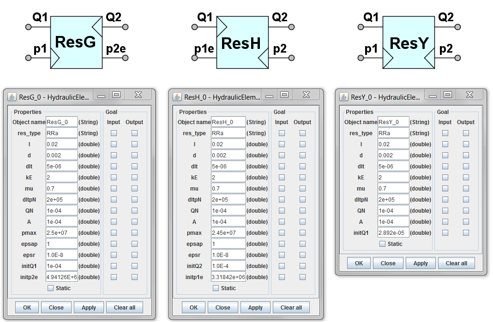

<div class="panel panel-default">
  <div class="panel-body">
 <h1>Hydraulic resistors</h1>
<p>Hydraulic resistors are presented as multi-pole models with four poles (four pole models). Three different resistor models are in use (denoted by suffixes G, H and Y) depending on input and output poles.  </p>

 
 
<p> Ports: </p>
<ul><li>	<strong>Q1</strong> - Volumetric flow at the left end of the resistor</li>
	<li><strong>Q2</strong> - Volumetric flow at the right end of the resistor</li>
	<li><strong>p1 (p1e)</strong> - pressure at the left end of the resistor</li>
	<li><strong>p2 (p2e)</strong> - pressure at the right end of the resistor</li></ul>

<p>In most cases suffix "e" denotes that the variable is computed using iteration
Inputs are denoted by input arrows inside the image box, for example for ResG Q2 and p1 are inputs, Q1 and p2e are outputs.</p>
<p>Properties for resistors are as follows:</p>
<ul>	<li><strong>l</strong> - length of resistor, m</li>
<li>	<strong>d</strong> - diameter of resistor, m</li>
	<li><strong>dlt</strong> - circular axial slot height, m</li>
	<li><strong>kE</strong> – excentricity coefficient of circular axial slot ( kE = 0 … 2.5)</li>
<li>	<strong>mu</strong> – discharge coefficient ( mu = 0.62 … 0.8)</li>
<li><strong>	dltpN</strong> – nominal pressure drop, Pa </li>
<li>	<strong>QN</strong> – nominal volumetric flow, m3/s</li>
<li>	<strong>A</strong> – cross section area of the resistor, m2</li>
<li><strong>	pmax</strong> - maximal allowed pressure, Pa</li>
<li>	<strong>epsap</strong> - allowed absolute error</li>
<li>	<strong>epsr</strong> - allowed relative error</li>
<li><strong>	initQ1</strong> - initial approximate value of Q1, m3/s</li>
<li>	<strong>initp2e</strong> - initial approximate value of p2e, Pa </li>
	<li><strong>res_type</strong>  -  resistor type ( RRa - resistor with round channel (depends on  l, d) 
			  <ul> <li><strong>RRb</strong> - resistor with circular axial slot (depends on  l, d, dlt, kE)</li>
			 <li>  <strong>RRc</strong> - resistor with round orifice (depends on  l, d)</li>
			 <li>  <strong>RRd</strong> - resistor with not round orifice (depends on  l, mu, A)</li>
			 <li> <strong> RRe</strong> - resistor with local hydraulic resistance (depends on l, d)</li>
		<li>	   <strong>RRg</strong> - resistor with linear resistance (depends on l, dltpN, QN, l, d)</li>
			  <li> <strong>RRh</strong> - resistor with square resistance (depends on l, dltpN, QN, mu )</li></ul></li>

</ul>
  </div>
  </div>